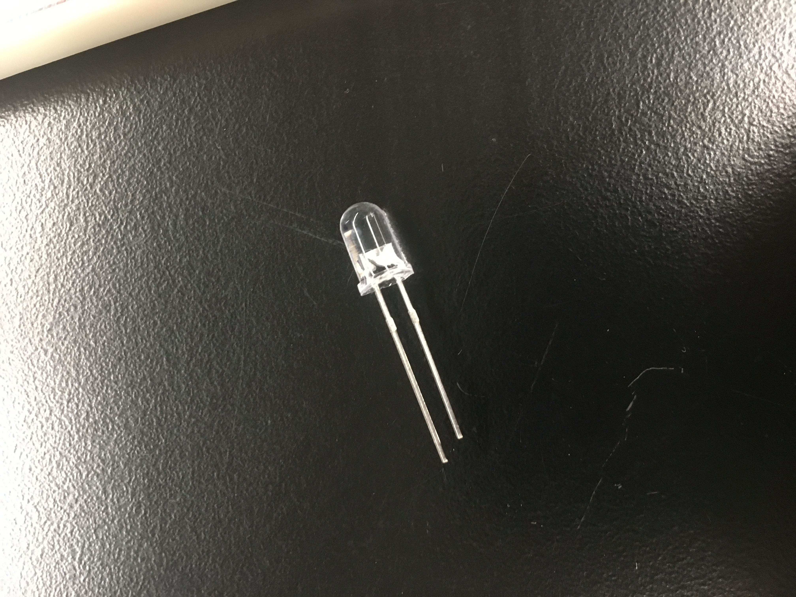

This week we used a breadboard to create a simple circuit to light an LED bulb using an Adafruit Board for Arduino.
In the set up, we connected 3.3V to a 1K Ohm resistor to an LED to Ground. Using arduino we could use example code to make the LED blink or fade. The use of the resistor is crucial to avoid burning out the LED. I also used the 3 Volts rather than the 5V because the processing uses 3V, therefore it is more commonly recommended.